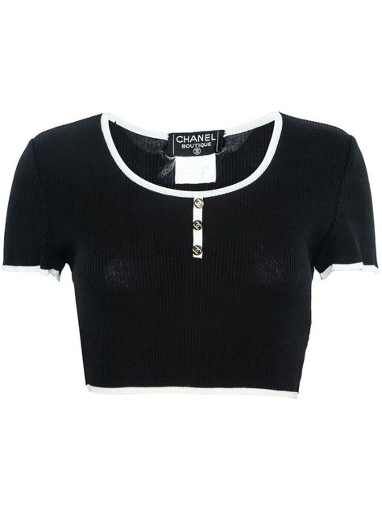
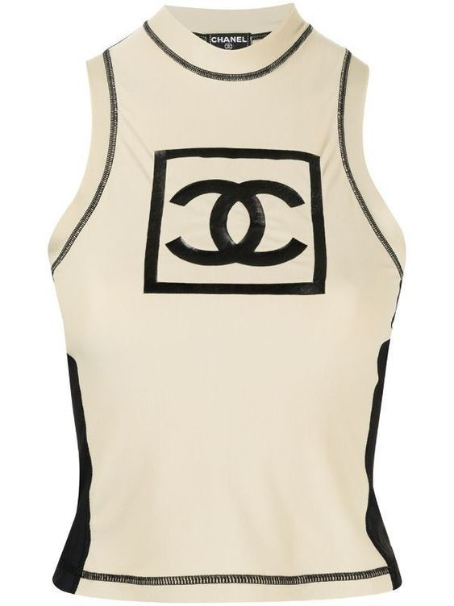
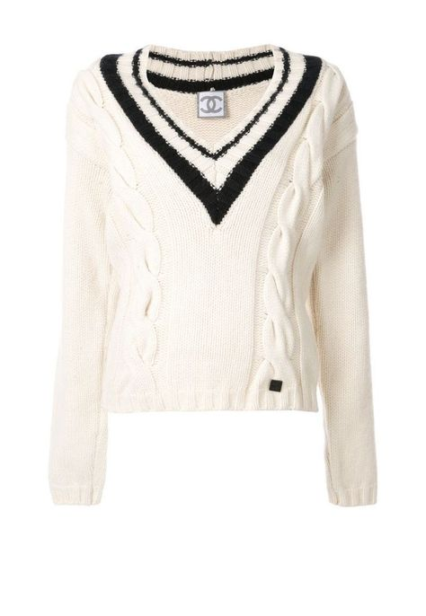

CHANEL TOPS

This is a chanel 1995-1996 cropped knit top. The borders of the top, in addition to the buttons, give a vintage aspect to the shirt.

The chanel 2003 sleeveless sports top can be quite an interesting addition to your closet. Pairing it with a low waisted denim skirt can take you back to 2000's fashion. Styling your hair in a sleek claw clip bun gives you a clean and effortless look. The high neckline restricts wearing a necklace. However, one can wear silver-colored braclets to accesorize.

This is an elegant chanel sweater which can be worn at school during the fall time. The low neckline can be paired with a beautiful gold necklace that accentuates the colors of the sweater.
Chanel Website